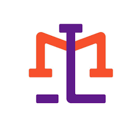

RESUME
Educational Background
Primary:
Mapangpang Elem. School - Lupao, N.E. - 2014
Secondary:
DHC National Highschool - Lupao, N.E. - 2020
Tertiary:
PUP Manila - Sta. Mesa, Manila - 2025
Formal Image:
Seminar Attended
Seminar Title:
Aug-Oct 2023 - Ortigas Ave, Pasig - Lexmeet Inc.
Your Picture:

Character Reference
Full Name1:
Position, Company Name, Contact Number
Full Name2:
Position, Company Name, Contact Number